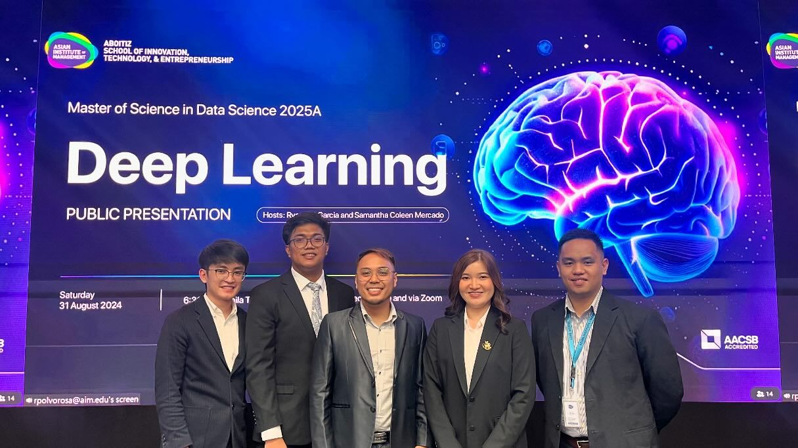
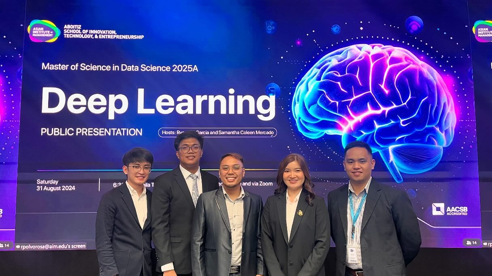
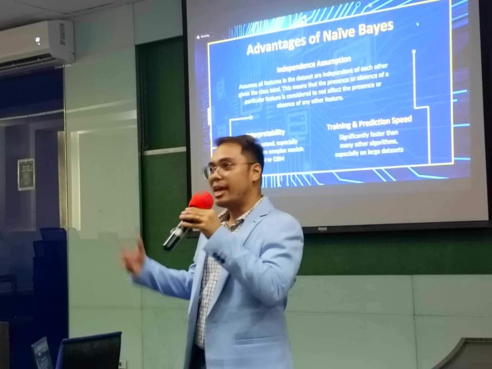
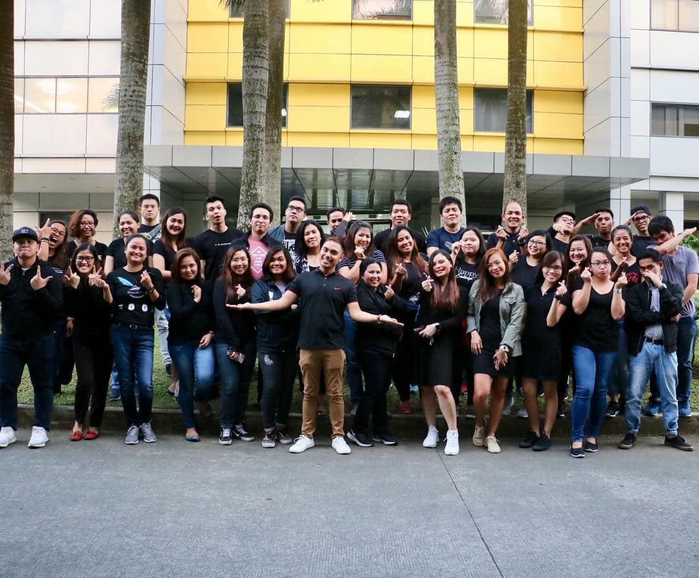
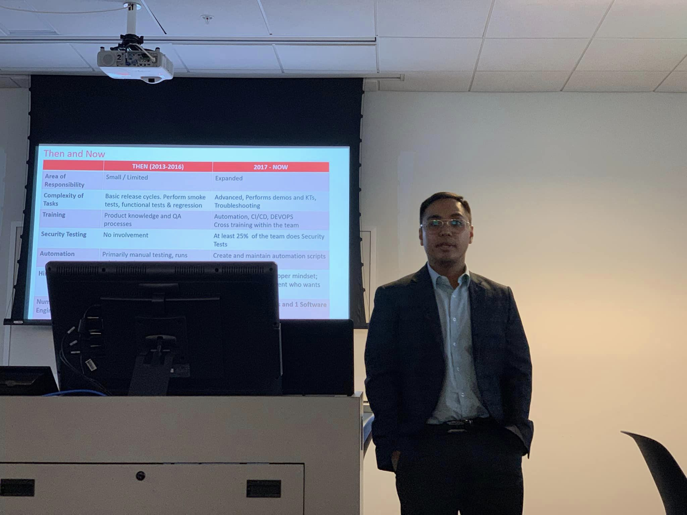
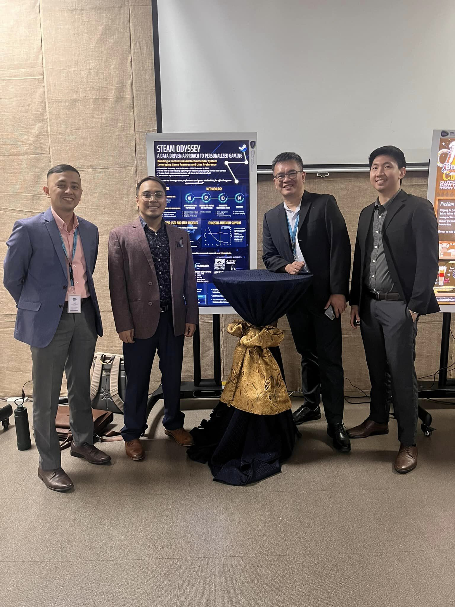
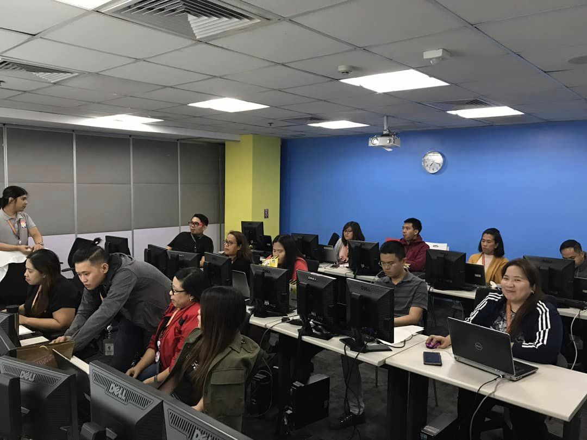

Deep Learning
Deep learning presentation on Retrieval Augmentend Generation System.
Below are some pictures of myself on various technology events and presentations.
Deep learning presentation on Retrieval Augmentend Generation System.
Machine Learning presentation on Naive Bayes.
Post-Java training photo ops.
QA Conference held in Boca Raton, Florida.
Presentation on Recommender Systems for Data Mining and Wrangling.
Training on Git for test engineers.
